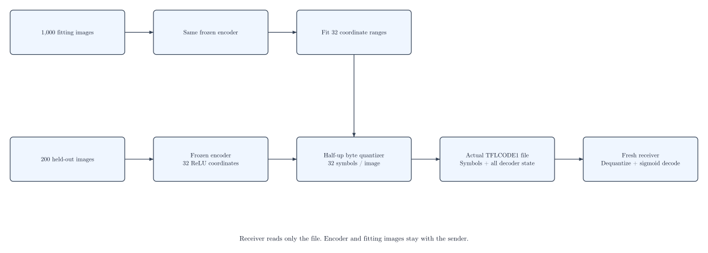
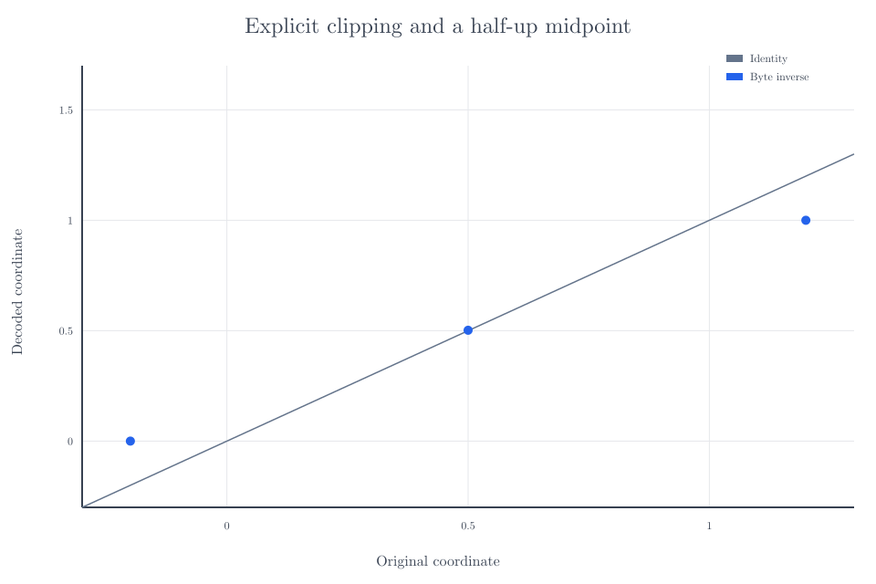
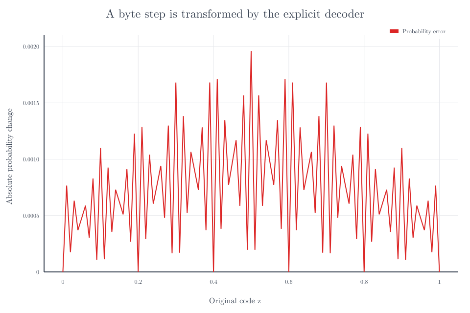
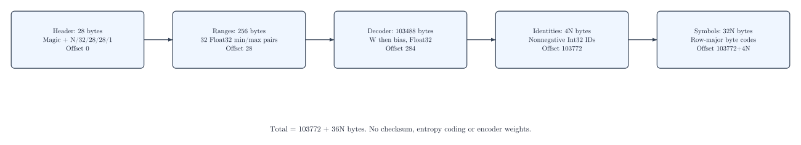
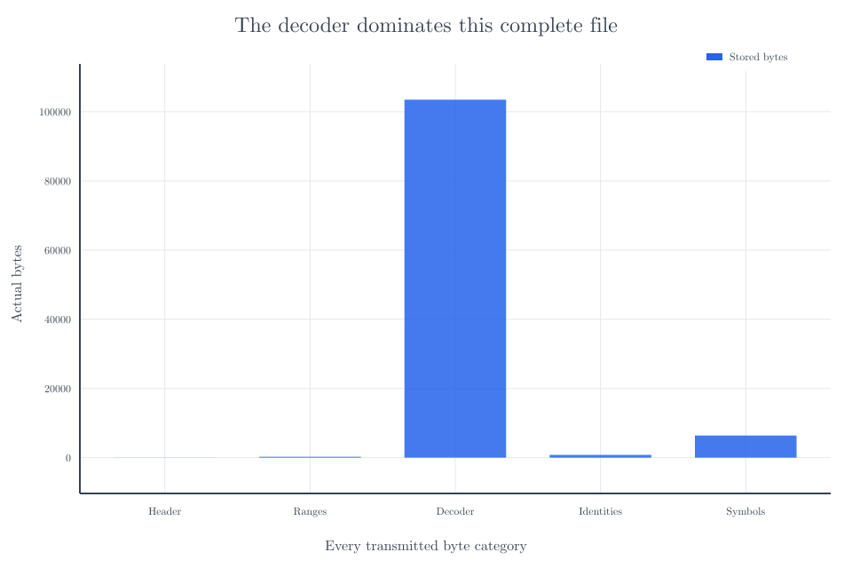
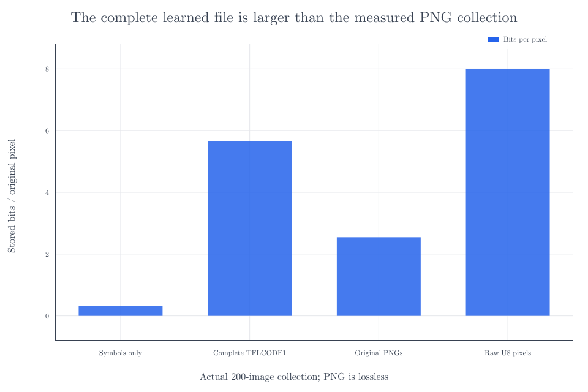
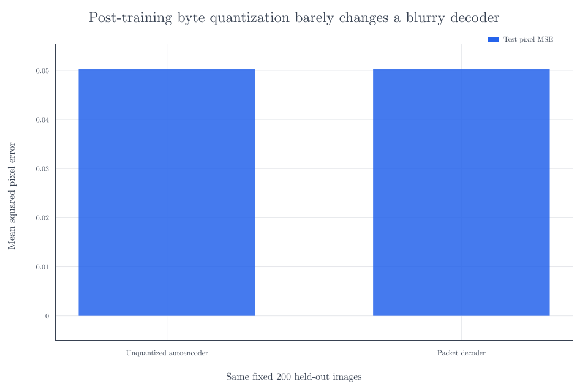
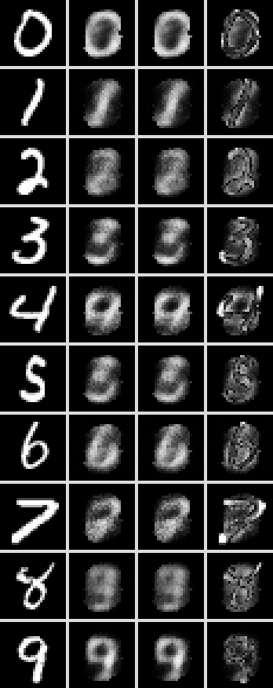
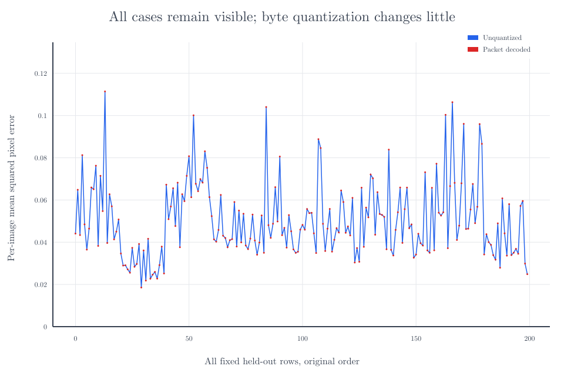

Learned Image Codec: Counting the Complete File
Abstract
This compact learned-transform codec sends an actual self-contained file: byte symbols, fitting ranges, decoder parameters and source identities. A visible prerequisite trains the original 784–32–784 autoencoder for three epochs and 96 Adam updates. The codec itself adds zero updates. On 200 fixed held-out MNIST images, the symbol payload is 6,400 bytes, but the complete file is 110,972 bytes, including 103,488 decoder bytes. The actual original-image PNG collection is smaller at 49,889 bytes. Quantization changes test pixel MSE from .050325811 to .050327014; the underlying blurry reconstructions remain. A fresh process can decode using only the file, without the encoder, images or fitting data. Every byte category and all ten fixed unfiltered cases are retained.
Analysis, quantization, transmission and synthesis
The encoder maps each 784-pixel image to 32 nonnegative ReLU coordinates. Per-coordinate minima and maxima are fitted to 1,000 fitting codes. Each test code then becomes 32 uniform 8-bit symbols. The receiver reconstructs code values from the stored bounds and applies the stored sigmoid decoder. Encoder weights are not needed at the receiver. Decoder weights, quantizer bounds and source identities are transmitted in this experiment's full-file rate.
Learned image compression can jointly optimize nonlinear transforms and quantization for rate-distortion performance, as in [Ballé, Laparra and Simoncelli (ICLR 2017)](https://arxiv.org/abs/1611.01704). Here the original small MSE autoencoder is frozen before post-training quantization. There is no entropy model, entropy coding or rate-distortion objective in this local teaching format.
#include <dm/dm.hpp>
int main() {
std::filesystem::create_directories("build");
dm::graphics::Diagram d(47, 1250);
dm::graphics::DiagramNodeStyle s;
s.width = 7.2;
s.height = 2.8;
s.font_size = 18;
d.node("fit", {0, 8}, "1,000 fitting images", s)
.node("fitencoder", {9, 8}, "Same frozen encoder", s)
.node("bounds", {18, 8}, "Fit 32 coordinate ranges", s)
.node("test", {0, 0}, "200 held-out images", s)
.node("encoder", {9, 0}, "Frozen encoder\n32 ReLU coordinates", s)
.node("q", {18, 0}, "Half-up byte quantizer\n32 symbols / image", s)
.node("file", {27, 0}, "Actual TFLCODE1 file\nSymbols + all decoder state", s)
.node("decode", {36, 0}, "Fresh receiver\nDequantize + sigmoid decode", s)
.edge("fit", "fitencoder")
.edge("fitencoder", "bounds")
.edge("bounds", "q")
.edge("test", "encoder")
.edge("encoder", "q")
.edge("q", "file")
.edge("file", "decode")
.text(
{18, -5},
"Receiver reads only the file. Encoder and fitting images stay with the sender.",
20)
.save_svg("build/codec_method.svg");
}
A quantizer that can be checked by hand
For a nonconstant coordinate with fitting bounds low and high, the stored symbol is floor(clamp((v-low)/(high-low)*255,0,255)+.5). The arithmetic is evaluated in double after reading Float32 inputs and ranges. With bounds [0,1], queries -.2,.5,1.2 become 0,128,255; the middle value decodes to Float32(128/255), approximately .5019608. Halfway normalized values round upward. If high equals low, every query emits zero and dequantization returns the constant range value. Clamping loses out-of-range information; the fitting range is not expanded using test values.
#include <dm/dm.hpp>
int main() {
namespace n = dm::nn;
namespace m = n::models;
const m::CodecQuantizer q{{0.f}, {1.f}};
const auto query = n::tensor({-.2, .5, 1.2}, {3, 1});
const auto symbols = m::QuantizeCodec(query, q);
const auto decoded = m::DequantizeCodec(symbols, q);
std::print("| query | symbol | decoded |\n|---:|---:|---:|\n");
for (int i = 0; i < 3; ++i)
std::print("| {:.1f} | {} | {:.9f} |\n", query.at({i, 0}), int(symbols[i]), decoded.at({i, 0}));
auto plot = dm::graphics::RPlot::create();
plot.lines({-.3, 1.3}, {-.3, 1.3}, "Identity", {100, 116, 139}, 1.5)
.points(
query.to_vector<double>(), decoded.to_vector<double>(), "Byte inverse", {37, 99, 235}, 5.)
.x_limits(-.3, 1.3)
.y_limits(-.3, 1.7)
.x_label("Original coordinate")
.y_label("Decoded coordinate")
.title("Explicit clipping and a half-up midpoint")
.save_svg("build/codec_toy_quantizer.svg");
}| query | symbol | decoded |
|---|---|---|
| -0.2 | 0 | 0.000000000 |
| 0.5 | 128 | 0.501960814 |
| 1.2 | 255 | 1.000000000 |

Code error reaches the decoder through its own sensitivity
A one-coordinate decoder sigmoid(4z-2) shows how a small code displacement affects a probability. It is not a second encoder and needs no input image. The error bound of half a quantizer step applies to coordinates inside a nonconstant fitted interval; clipped queries can have larger code error. It does not by itself bound pixel error independently of decoder weights and activation slopes. The actual experiment measures both reconstruction errors.
#include <dm/dm.hpp>
int main() {
namespace n = dm::nn;
namespace m = n::models;
const auto x = n::linspace(0, 1, 101).reshape({101, 1}), w = n::full({1, 1}, 4.),
bias = n::full({1}, -2.);
const auto exact = m::LearnedCodecDecode(x, w, bias);
const auto inverse = m::DequantizeCodec(m::QuantizeCodec(x, {{0.f}, {1.f}}), {{0.f}, {1.f}});
const auto quantized = m::LearnedCodecDecode(inverse, w, bias);
const auto error = n::abs(quantized - exact);
std::print("Maximum toy probability change: {:.9f}.\n", n::max(error).item());
auto plot = dm::graphics::RPlot::create();
plot.lines(
x.to_vector<double>(), error.to_vector<double>(), "Probability error", {220, 38, 38}, 2.)
.y_limits(0, .0021)
.y_ticks({0, .0005, .001, .0015, .002}, {"0", "0.0005", "0.0010", "0.0015", "0.0020"})
.x_label("Original code z")
.y_label("Absolute probability change")
.title("A byte step is transformed by the explicit decoder")
.save_svg("build/codec_toy_decoder.svg");
}Maximum toy probability change: 0.001960814.

Complete native prerequisite: reproduce the frozen encoder
Native MNIST preparation retains the original fixed saliency pools: 1,000 fitting, 200 validation and 200 test images with source identities. A seed-1471 store initializes four leaves and 50,992 values. BatchOrder seed 1483 supplies fitting batches of 32, including each final eight-row batch. Adam uses .003 for three epochs, totaling 96 updates. Validation Float64 pixel MSE selects the checkpoint; held-out images do not select parameters or quantizer ranges. The following program shows the full preparation and optimizer loop and writes its initial and selected checkpoints.
#include <dm/dm.hpp>
namespace n = dm::nn;
double Score(const n::Tensor& prediction, const n::Tensor& target) {
return n::mean(
n::square(n::cast(prediction, n::DType::Float64) - n::cast(target, n::DType::Float64)))
.item();
}
int main() {
std::filesystem::create_directories("build");
const std::filesystem::path cache = dm::datasets::data_home();
dm::datasets::prepare_example_data("mnist-assets", cache.string());
const auto pools = n::models::LoadSaliency(cache / "saliency");
const auto fit = pools[0].images.reshape({1000, 784}),
validation = pools[1].images.reshape({200, 784}),
test = pools[2].images.reshape({200, 784});
n::ParameterStore p(1471);
{
n::NoGradGuard guard;
n::models::UndercompleteAutoencoder(p, n::zeros({1, 784}));
}
if (p.count() != 50992 || p.size() != 4)
return 1;
p.save("build/codec_initial_encoder.npz");
n::OptimizerConfig config;
config.kind = n::OptimizerKind::Adam;
n::Optimizer optimizer(p, .003, config);
n::BatchOrder batches(1000, 32, 1483);
double best = std::numeric_limits<double>::infinity();
int selected = 0, updates = 0;
std::vector<double> epochs, training, valid;
const auto started = std::chrono::steady_clock::now();
std::print(
"| epoch | fitting pre-update pixel MSE | validation post-epoch MSE |\n|---:|---:|---:|\n");
for (int epoch = 1; epoch <= 3; ++epoch) {
batches.begin_epoch();
double total = 0;
std::size_t seen = 0;
for (;;) {
const auto rows = batches.next();
if (rows.empty())
break;
const auto image = n::take_rows(fit, rows),
out = n::models::UndercompleteAutoencoder(p, image).reconstruction;
const auto loss = n::mse(out, image);
const auto value = loss.item();
if (!std::isfinite(value))
return 1;
total += value * rows.size();
seen += rows.size();
optimizer.minimize(loss);
++updates;
}
n::NoGradGuard guard;
const auto error =
Score(n::models::UndercompleteAutoencoder(p, validation).reconstruction, validation);
if (seen != 1000 || !std::isfinite(error))
return 1;
if (error < best) {
best = error;
selected = epoch;
p.save("build/codec_selected_encoder.npz");
}
epochs.push_back(epoch);
training.push_back(total / seen);
valid.push_back(error);
std::print("| {} | {:.9f} | {:.9f} |\n", epoch, total / seen, error);
}
const double seconds =
std::chrono::duration<double>(std::chrono::steady_clock::now() - started).count();
if (updates != 96 || selected < 1)
return 1;
p.load("build/codec_selected_encoder.npz");
n::NoGradGuard guard;
const auto test_result = n::models::UndercompleteAutoencoder(p, test);
std::ofstream meta("build/codec_prerequisite.json");
meta.precision(17);
meta << "{\"updates\":" << updates << ",\"selected_epoch\":" << selected
<< ",\"validation_mse\":" << best << ",\"training_seconds\":" << seconds << "}\n";
if (!meta)
return 1;
std::print(
"\nSelected epoch {} after {} Adam updates. Held-out MSE {:.9f}.\n",
selected,
updates,
Score(test_result.reconstruction, test));
auto plot = dm::graphics::RPlot::create();
plot.lines(epochs, training, "Fit pre-update", {37, 99, 235}, 2.)
.lines(epochs, valid, "Valid post-epoch", {220, 38, 38}, 2.)
.x_label("Epoch")
.y_label("Mean squared pixel error")
.title("Visible prerequisite: 96 Adam updates, then a frozen checkpoint")
.save_svg("build/codec_prerequisite.svg");
}| epoch | fitting pre-update pixel MSE | validation post-epoch MSE |
|---|---|---|
| 1 | 0.109698705 | 0.066644995 |
| 2 | 0.065107134 | 0.055756478 |
| 3 | 0.055117222 | 0.048601794 |
Selected epoch 3 after 96 Adam updates. Held-out MSE 0.050325811.

Encode an actual file, measure all bytes, and preserve every original artifact
The complete application fits 32 ranges to fitting codes only, packs 200 held-out records, writes and rereads the binary file, parses and repacks it, and compares a packet-only decode with the original decoder. Three malformed controls cover bad magic, truncated payload and an oversized count. Additional native unit tests exercise all fixed shape fields, nonfinite parameters, reversed bounds, negative identities and trailing bytes. The format has no checksum, so structurally valid altered bytes can remain undetected.
All 50,992 frozen values are checked for immutability. The native PNG writer saves every original test image; rates use measured file sizes, including each PNG header. No old source comment about a different PNG writer or an uncompressed baseline is used. Shared executable/runtime bytes are excluded for both formats; source identities are included in TFLCODE1, whereas PNG filenames and external container overhead are excluded. PNG is lossless and not quality matched to this blurry lossy decoder. The complete file is larger than this observed PNG collection.
#include <dm/dm.hpp>
namespace n = dm::nn;
namespace m = n::models;
void Require(bool condition, const std::string& message) {
if (!condition)
throw std::runtime_error(message);
}
double Mse(const n::Tensor& a, const n::Tensor& b) {
return n::mean(n::square(m::DoubleSampleRows(a) - m::DoubleSampleRows(b))).item();
}
std::vector<std::uint8_t> ReadBytes(const std::filesystem::path& path) {
std::ifstream in(path, std::ios::binary);
Require(bool(in), "Read generated packet");
return {(std::istreambuf_iterator<char>(in)), {}};
}
int main() {
const std::filesystem::path cache = dm::datasets::data_home(), root = "build/codec";
std::filesystem::create_directories(root / "original_png");
dm::datasets::prepare_example_data("mnist-assets", cache.string());
const auto pools = m::LoadSaliency(cache / "saliency");
n::ParameterStore p(1471);
{
n::NoGradGuard guard;
m::UndercompleteAutoencoder(p, n::zeros({1, 784}));
}
p.load("build/codec_selected_encoder.npz");
n::NamedTensors before;
for (const auto& name : p.names())
before.emplace_back(name, p.at(name).detach().clone());
n::NoGradGuard guard;
const auto fit = m::UndercompleteAutoencoder(p, pools[0].images.reshape({1000, 784})),
test = m::UndercompleteAutoencoder(p, pools[2].images.reshape({200, 784}));
// A small fixture is archived independently of the real fitting codes.
std::vector<float> smallfit(64, .25f), probe(96, .25f);
smallfit[0] = 0;
smallfit[32] = 1;
probe[0] = -.2f;
probe[32] = .5f;
probe[64] = 1.2f;
const auto fixture = n::from_vector(smallfit, {2, 32}), query = n::from_vector(probe, {3, 32});
const auto fixture_q = m::FitCodecQuantizer(fixture);
const auto fixture_s = m::QuantizeCodec(query, fixture_q);
const auto fixture_d = m::DequantizeCodec(fixture_s, fixture_q);
Require(
fixture_s[0] == 0 && fixture_s[32] == 128 && fixture_s[64] == 255,
"Half-up and clipping fixture");
n::save_npz(
(root / "quantizer_algebra.npz").string(),
{{"fit", fixture},
{"probe", query},
{"minimum", n::from_vector(fixture_q.minimum, {32})},
{"maximum", n::from_vector(fixture_q.maximum, {32})},
{"symbols", m::SymbolTensor(fixture_s)},
{"dequantized", fixture_d}});
const auto q = m::FitCodecQuantizer(fit.code);
const auto symbols = m::QuantizeCodec(test.code, q);
const m::CodecPacket packet{
q, p.at("decoder/W"), p.at("decoder/b"), pools[2].source.to_vector<int>(), symbols};
const auto bytes = m::PackCodec(packet);
const auto file = root / "test.tflcodec";
{
std::ofstream out(file, std::ios::binary);
out.write(reinterpret_cast<const char*>(bytes.data()), std::streamsize(bytes.size()));
Require(bool(out), "Write complete packet");
}
const auto reread = ReadBytes(file);
Require(reread == bytes, "Actual file byte roundtrip");
const auto parsed = m::UnpackCodec(reread);
Require(m::PackCodec(parsed) == bytes, "Exact parse/repack");
const auto dequantized = m::DequantizeCodec(parsed.symbols, parsed.quantizer),
decoded = m::DecodeCodec(parsed), reference = m::UndercompleteDecoder(p, dequantized);
const auto decode_error = n::max(n::abs(decoded - reference)).item();
Require(decode_error < 2e-6, "Packet-only decoder parity");
int rejected = 0;
for (int kind = 0; kind < 3; ++kind) {
auto broken = bytes;
if (kind == 0)
broken[0] = 'X';
else if (kind == 1)
broken.pop_back();
else
for (int j = 8; j < 12; ++j)
broken[j] = 255;
try {
m::UnpackCodec(broken);
} catch (const std::invalid_argument&) {
++rejected;
}
}
Require(rejected == 3, "Original three malformed controls");
int clipped = 0, constant = 0;
const auto code = test.code.to_vector<float>();
for (int j = 0; j < 32; ++j) {
constant += q.minimum[j] == q.maximum[j];
for (int row = 0; row < 200; ++row)
clipped += code[row * 32 + j] < q.minimum[j] || code[row * 32 + j] > q.maximum[j];
}
for (const auto& [name, value] : before)
Require(n::equal_bits(value, p.at(name)), "Immutable frozen weights");
n::save_npz(
(root / "analysis.npz").string(),
{{"fit_images", pools[0].images},
{"fit_labels", pools[0].labels},
{"fit_source_ids", pools[0].source},
{"test_images", pools[2].images},
{"test_labels", pools[2].labels},
{"test_source_ids", pools[2].source},
{"fit_code", fit.code},
{"test_code", test.code},
{"unquantized_reconstruction", test.reconstruction},
{"minimum", n::from_vector(q.minimum, {32})},
{"maximum", n::from_vector(q.maximum, {32})},
{"symbols", m::SymbolTensor(symbols)},
{"dequantized", dequantized},
{"decoded_reconstruction", decoded}});
n::save_npz((root / "model_arrays.npz").string(), before);
std::filesystem::copy_file(
cache / "saliency/manifest.json",
root / "data_manifest.json",
std::filesystem::copy_options::overwrite_existing);
std::ofstream sizes(root / "png_sizes.tsv");
sizes << "source_id\tbytes\n";
std::size_t png_bytes = 0;
const auto source = pools[2].source.to_vector<int>();
for (int row = 0; row < 200; ++row) {
const auto name = root / "original_png" / (std::to_string(source[row]) + ".png");
n::save_png(n::take_rows(pools[2].images, {row}).reshape({28, 28, 1}), name.string());
const auto length = std::filesystem::file_size(name);
png_bytes += length;
sizes << source[row] << '\t' << length << '\n';
}
const std::size_t payload = 200 * 32, model_bytes = 25872 * 4, range_bytes = 32 * 2 * 4,
id_bytes = 200 * 4, header_bytes = 28;
Require(
bytes.size() == payload + model_bytes + range_bytes + id_bytes + header_bytes,
"Every byte accounted");
const double mse = Mse(decoded, pools[2].images),
unquantized = Mse(test.reconstruction, pools[2].images),
psnr = 10 * std::log10(1 / mse);
std::ofstream meta(root / "metrics.json");
meta.precision(17);
meta << "{\"additional_training_updates\":0,\"test_images\":200,\"latent_dimensions\":32,\"bits_"
"per_symbol\":8,"
<< "\"constant_channels\":" << constant << ",\"clipped_test_code_entries\":" << clipped
<< ",\"payload_bytes\":" << payload << ",\"decoder_parameter_bytes\":" << model_bytes
<< ",\"quantizer_bytes\":" << range_bytes << ",\"source_identity_bytes\":" << id_bytes
<< ",\"header_bytes\":" << header_bytes << ",\"total_file_bytes\":" << bytes.size()
<< ",\"original_raw_u8_bytes\":156800,\"original_png_collection_bytes\":" << png_bytes
<< ",\"payload_bits_per_pixel\":" << double(payload * 8) / (200 * 784)
<< ",\"total_bits_per_pixel\":" << double(bytes.size() * 8) / (200 * 784)
<< ",\"png_bits_per_pixel\":" << double(png_bytes * 8) / (200 * 784)
<< ",\"unquantized_test_mse\":" << unquantized << ",\"decoded_test_mse\":" << mse
<< ",\"decoded_global_psnr_db\":" << psnr << ",\"fresh_decoder_max_error\":" << decode_error
<< ",\"malformed_controls_rejected\":3}\n";
const auto error = n::abs(decoded - pools[2].images.reshape({200, 784}));
for (int k = 0; k < 10; ++k) {
const int row = k * 199 / 9;
std::vector<n::Tensor> tiles;
for (const auto& panel : {pools[2].images, test.reconstruction, decoded, error})
tiles.push_back(n::take_rows(panel, {row}).reshape({28, 28, 1}));
n::save_image_grid(
n::tile(n::stack(tiles, 0), {1, 1, 1, 3}),
(root / ("case_" + std::to_string(k) + ".png")).string(),
4,
0,
1,
4,
220. / 255.,
3);
}
Require(bool(meta) && bool(sizes), "Complete numerical and measured-file records");
std::print(
"| byte category | measured bytes |\n|---|---:|\n| Header | {} |\n| Quantizer | {} |\n| "
"Decoder | {} |\n| Identities | {} |\n| Symbols | {} |\n| Total file | {} |\n| Original PNG "
"collection | {} |\n",
header_bytes,
range_bytes,
model_bytes,
id_bytes,
payload,
bytes.size(),
png_bytes);
std::print(
"\nMSE: unquantized {:.12f}, packet decoded {:.12f}; global PSNR {:.9f} dB.\nConstant "
"channels {}, clipped code entries {}. All 50992 model values unchanged; zero new updates.\n",
unquantized,
mse,
psnr,
constant,
clipped);
}| byte category | measured bytes |
|---|---|
| Header | 28 |
| Quantizer | 256 |
| Decoder | 103488 |
| Identities | 800 |
| Symbols | 6400 |
| Total file | 110972 |
| Original PNG collection | 49889 |
MSE: unquantized 0.050325810702, packet decoded 0.050327014201; global PSNR 12.981988346 dB. Constant channels 3, clipped code entries 9. All 50992 model values unchanged; zero new updates.
A separate program decodes without loading a dataset or encoder
This is a complete second receiver executable. It opens only the generated file, parses its bounded structure and decodes from packet values. It saves reconstructed probabilities and identities for a byte-exact comparison with the sender-side result. It neither instantiates an encoder nor accesses the dataset cache.
#include <dm/dm.hpp>
int main() {
namespace n = dm::nn;
std::ifstream input("build/codec/test.tflcodec", std::ios::binary);
if (!input)
throw std::runtime_error("Open transmitted codec file");
const std::vector<std::uint8_t> bytes((std::istreambuf_iterator<char>(input)), {});
const auto packet = n::models::UnpackCodec(bytes);
const auto decoded = n::models::DecodeCodec(packet);
n::save_npz(
"build/codec/fresh_decoded.npz",
{{"source_ids", n::from_vector(packet.source_ids, {std::int64_t(packet.source_ids.size())})},
{"reconstruction", decoded}});
std::print(
"Decoded {} images from {} bytes; no encoder or dataset access.\n",
packet.source_ids.size(),
bytes.size());
}Decoded 200 images from 110972 bytes; no encoder or dataset access.
The teaching packet format is explicit
TFLCODE1 is a local fixed-architecture format, preserved for compatibility with the original example. Unsigned integers and IEEE754 Float32 scalars are little endian. The five header integers are N,32,28,28,1. Bounds are interleaved minimum/maximum pairs; decoder weights are row-major [32,784], followed by 784 biases. Source identities precede N*32 payload bytes. The parser accepts 1 through 10,000 images and exactly 103772+36*N bytes. Signed-zero float bits survive serialization; every encoded parameter must be finite and every bound ordered.
#include <dm/dm.hpp>
int main() {
dm::graphics::Diagram d(48, 1300);
dm::graphics::DiagramNodeStyle s;
s.width = 7.4;
s.height = 3.2;
s.font_size = 18;
d.node("h", {0, 0}, "Header: 28 bytes\nMagic + N/32/28/28/1\nOffset 0", s)
.node("q", {9, 0}, "Ranges: 256 bytes\n32 Float32 min/max pairs\nOffset 28", s)
.node("w", {18, 0}, "Decoder: 103488 bytes\nW then bias, Float32\nOffset 284", s)
.node("i", {27, 0}, "Identities: 4N bytes\nNonnegative Int32 IDs\nOffset 103772", s)
.node("p", {36, 0}, "Symbols: 32N bytes\nRow-major byte codes\nOffset 103772+4N", s)
.edge("h", "q")
.edge("q", "w")
.edge("w", "i")
.edge("i", "p")
.text(
{18, -5},
"Total = 103772 + 36N bytes. No checksum, entropy coding or encoder weights.",
20)
.save_svg("build/codec_packet_layout.svg");
}
Payload rate and complete-file rate answer different questions
The 6,400 symbol bytes alone cost .326531 bits per pixel. The complete file costs 5.661837 bits per pixel, while the measured PNG collection costs 2.545357. Decoder overhead is amortized over these actual 200 images. The figure below exposes the overhead before the rate comparison; no imaginary corpus or payload-only rate replaces the full file. A coordinate count of 32 versus 784 by itself is not a compression-rate measurement.
#include <dm/dm.hpp>
int main() {
std::ifstream in("build/codec/test.tflcodec", std::ios::binary | std::ios::ate);
if (!in)
throw std::runtime_error("Open packet");
const auto bytes = std::size_t(in.tellg());
const auto n = dm::nn::models::UnpackCodec([&] {
in.seekg(0);
return std::vector<std::uint8_t>((std::istreambuf_iterator<char>(in)), {});
}())
.source_ids.size();
const std::vector<double> x{0, 1, 2, 3, 4},
counts{28, 256, 103488, double(n * 4), double(n * 32)};
if (bytes != 28 + 256 + 103488 + n * 36)
throw std::runtime_error("Complete accounting");
auto plot = dm::graphics::RPlot::create();
plot.bars(x, counts, "Stored bytes", dm::RGBA{37, 99, 235}, .7)
.x_ticks(x, {"Header", "Ranges", "Decoder", "Identities", "Symbols"})
.x_label("Every transmitted byte category")
.y_label("Actual bytes")
.title("The decoder dominates this complete file")
.save_svg("build/codec_byte_categories.svg");
}
#include <dm/dm.hpp>
int main() {
namespace n = dm::nn;
std::ifstream in("build/codec/test.tflcodec", std::ios::binary);
if (!in)
throw std::runtime_error("Open packet");
const std::vector<std::uint8_t> bytes((std::istreambuf_iterator<char>(in)), {});
const auto packet = n::models::UnpackCodec(bytes);
std::size_t png = 0;
for (int id : packet.source_ids)
png += std::filesystem::file_size(
std::filesystem::path("build/codec/original_png") / (std::to_string(id) + ".png"));
const double pixels = packet.source_ids.size() * 784.;
const std::vector<double> x{0, 1, 2, 3};
const std::vector<double> rates{
packet.symbols.size() * 8 / pixels, bytes.size() * 8 / pixels, png * 8 / pixels, 8};
auto plot = dm::graphics::RPlot::create();
plot.bars(x, rates, "Bits per pixel", dm::RGBA{37, 99, 235}, .65)
.x_ticks(x, {"Symbols only", "Complete TFLCODE1", "Original PNGs", "Raw U8 pixels"})
.x_label("Actual 200-image collection; PNG is lossless")
.y_label("Stored bits / original pixel")
.title("The complete learned file is larger than the measured PNG collection")
.save_svg("build/codec_rates.svg");
}
Quantization error is small beside the learned reconstruction loss
The global test MSE uses all 156,800 pixel values. Global PSNR is 10 log10(1/MSE) for the fixed unit pixel range; it is not the mean of per-image PSNR. Quantization slightly increases pixel MSE here. The 32-code decoder’s reconstruction loss dominates that difference. There are three constant fitting-code channels and nine out-of-range held-out code entries; these values are retained in the archived diagnostics. No quality-success selection is applied.
#include <dm/dm.hpp>
int main() {
namespace n = dm::nn;
std::map<std::string, n::Tensor> a;
for (const auto& [k, v] : n::load_npz("build/codec/analysis.npz"))
a.emplace(k, v);
const auto truth = n::models::DoubleSampleRows(a.at("test_images"));
std::vector<double> errors;
for (const auto& key : {"unquantized_reconstruction", "decoded_reconstruction"})
errors.push_back(n::mean(n::square(n::models::DoubleSampleRows(a.at(key)) - truth)).item());
std::print("Additional pixel MSE after quantization: {:.12g}.\n", errors[1] - errors[0]);
auto plot = dm::graphics::RPlot::create();
plot.bars({0, 1}, errors, "Test pixel MSE", dm::RGBA{37, 99, 235}, .6)
.x_ticks({0, 1}, {"Unquantized autoencoder", "Packet decoder"})
.x_label("Same fixed 200 held-out images")
.y_label("Mean squared pixel error")
.title("Post-training byte quantization barely changes a blurry decoder")
.save_svg("build/codec_distortion.svg");
}Additional pixel MSE after quantization: 1.203498187e-06.

Ten predetermined held-out cases, including failures
Rows use indices floor(k*199/9), k=0,...,9, exactly the original evenly spaced rule. Columns are original image, unquantized autoencoder, file-decoded reconstruction and absolute decoded pixel error. Images use fixed [0,1] grayscale with no per-image normalization; error uses that same range and is not amplified. Source IDs and both per-case errors make the weak cases traceable. Labels do not choose cases, fit ranges, enter the file or select the model.
#include <dm/dm.hpp>
int main() {
namespace n = dm::nn;
std::map<std::string, n::Tensor> a;
for (const auto& [k, v] : n::load_npz("build/codec/analysis.npz"))
a.emplace(k, v);
const auto truth = a.at("test_images").reshape({200, 784}),
unq = a.at("unquantized_reconstruction"), decoded = a.at("decoded_reconstruction"),
error = n::abs(decoded - truth);
const auto source = a.at("test_source_ids").to_vector<int>();
std::vector<n::Tensor> tiles;
std::print("| row | source ID | unquantized MSE | decoded MSE |\n|---:|---:|---:|---:|\n");
for (int k = 0; k < 10; ++k) {
const int row = k * 199 / 9;
const auto original = n::take_rows(truth, {row});
auto mse = [&](const n::Tensor& x) {
return n::mean(
n::square(
n::cast(n::take_rows(x, {row}), n::DType::Float64) -
n::cast(original, n::DType::Float64)))
.item();
};
std::print("| {} | {} | {:.9f} | {:.9f} |\n", row, source[row], mse(unq), mse(decoded));
for (const auto& p : {truth, unq, decoded, error})
tiles.push_back(n::take_rows(p, {row}).reshape({1, 28, 28, 1}));
}
n::save_image_grid(n::concat(tiles, 0), "build/codec_cases.png", 4, 0, 1, 4, 220. / 255., 3);
}| row | source ID | unquantized MSE | decoded MSE |
|---|---|---|---|
| 0 | 66921 | 0.044068047 | 0.044086513 |
| 22 | 69602 | 0.029075485 | 0.029074144 |
| 44 | 62158 | 0.047673783 | 0.047658619 |
| 66 | 68876 | 0.042010185 | 0.042001345 |
| 88 | 68434 | 0.066132181 | 0.066081013 |
| 110 | 62282 | 0.035852760 | 0.035835757 |
| 132 | 62066 | 0.043522329 | 0.043553617 |
| 154 | 63525 | 0.073159402 | 0.073150631 |
| 176 | 64419 | 0.049004902 | 0.049017450 |
| 199 | 64610 | 0.024867230 | 0.024859361 |

#include <dm/dm.hpp>
int main() {
namespace n = dm::nn;
std::map<std::string, n::Tensor> a;
for (const auto& [k, v] : n::load_npz("build/codec/analysis.npz"))
a.emplace(k, v);
const auto truth = n::models::DoubleSampleRows(a.at("test_images"));
std::vector<double> rows, unq, decoded;
for (int i = 0; i < 200; ++i) {
rows.push_back(i);
const auto original = n::take_rows(truth, {i});
auto mse = [&](const std::string& key) {
return n::mean(
n::square(n::models::DoubleSampleRows(n::take_rows(a.at(key), {i})) - original))
.item();
};
unq.push_back(mse("unquantized_reconstruction"));
decoded.push_back(mse("decoded_reconstruction"));
}
auto plot = dm::graphics::RPlot::create();
plot.lines(rows, unq, "Unquantized", {37, 99, 235}, 1.5)
.points(rows, decoded, "Packet decoded", {220, 38, 38}, 1.5)
.y_limits(
0,
1.2 * std::max(
*std::max_element(unq.begin(), unq.end()),
*std::max_element(decoded.begin(), decoded.end())) +
.001)
.x_label("All fixed held-out rows, original order")
.y_label("Per-image mean squared pixel error")
.title("All cases remain visible; byte quantization changes little")
.save_svg("build/codec_all_case_errors.svg");
}
Fidelity, validation and limits
The canonical API owns the reusable quantizer, continuous decoder and bounded binary format. The report owns its visible fitting, file IO, evaluation and figures. The original three archives, 1,359,472 values, 110,972-byte bitstream, PNG collection and source identities are preserved. The initial and selected prerequisite checkpoints reproduce 101,984 parameter values exactly. Native Float64 MSE and global-PSNR reductions have small stated floating roundoff; elapsed prerequisite time is measured anew. There are no codec optimizer updates or hidden transmitted encoder parameters. This single fixed model and pool do not establish competitive compression, semantic preservation or robustness on other images.
An optional independent NumPy/stdlib development check verifies 352,000 decoder/encoder forward values, 6,496 exact symbols and dequantized coordinates, every packet byte, malformed controls and all 200 lossless PNGs / 156,800 pixels. It does no preparation or training and is separate from the complete native programs above.
References
- Ballé, J., Laparra, V. and Simoncelli, E. P. (2017). [End-to-end Optimized Image Compression](https://arxiv.org/abs/1611.01704). ICLR. The present frozen teaching autoencoder does not implement that paper's joint rate-distortion model.
- TFLCODE1 is the original local example's explicitly documented teaching format; it is not a general interchange standard.